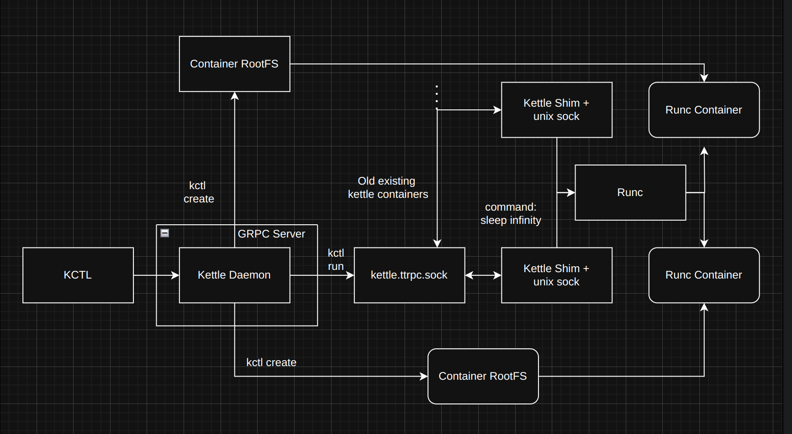
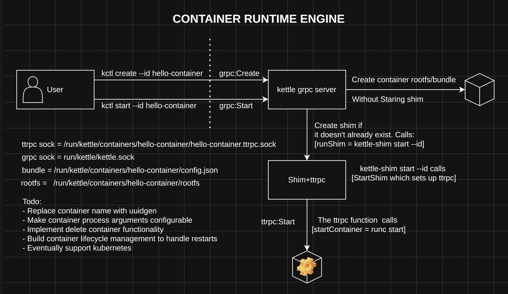

projects/kettle/
01 · container runtime engine
Kettle
Kettle is a minimal container runtime engine designed to emulate a containerd-like architecture for performing fundamental container lifecycle operations. At its current stage, the project does not introduce custom runtime behavior. Its primary objective is to develop a deep, first-principles understanding of how modern container runtimes are built and operate.
To that end, Kettle intentionally avoids using containerd's high-level abstractions or convenience APIs (because where's the fun in that). Foundational components such as libcontainer, runc and other low-level building blocks from the container ecosystem are leveraged where necessary, but the long-term goal is to progressively reimplement and replace these dependencies to gain complete control and insight into the runtime stack.

The three components
The project mainly comprises three components, all available in ./cmd:
- KCTL: the client. You specify the runc bundle path along with a container ID.
- Kettle: the gRPC server, on
/run/kettle/kettle.sock. It exposes aContainersservice (Create,Start). - Kettle-Shim: launched for each container and responsible for owning the IO. It serves the
TaskAPI over ttrpc.
KCTL talks to the Kettle gRPC server, which in turn creates a runc rootfs container along with its shim process. To start this container we contact the shim server.
$ sudo ./cmd/kettle/kettle starting server gRPC server started on /run/kettle/kettle.sock $ sudo ./kctl create --bundle ~/projects/kettle/cmd/kctl/sample-container --id sample-container create called gRPC connected successfully
You have now created a runc container through gRPC!
Create and start, step by step

/.">grpc:Create, then grpc:Start, then ttrpc:Start.kctl create --id hello-container→grpc:Create: create container rootfs/bundle, without starting the shim.kctl start --id hello-container→grpc:Start: create the shim if it doesn't already exist. This callsrunShim = kettle-shim start --id.kettle-shim start --idcallsStartShim, which sets up ttrpc.- The ttrpc function calls
startContainer = runc start.
ttrpc sock = /run/kettle/containers/hello-container/hello-container.ttrpc.sock grpc sock = /run/kettle/kettle.sock bundle = /run/kettle/containers/hello-container/config.json rootfs = /run/kettle/containers/hello-container/rootfs
Why a shim?
There are several ways to create a container. You can directly start a shim manually, which creates a container using runc, or you can have a containerd-like service running which creates the shim. Kettle does the latter.
We basically create a shim process through the binary. This binary in turn spins up a ttrpc server which has "task"-based proto funcs. We do not use ttrpc to create the shim; we use the ttrpc client only after creating the shim. ttrpc servers exist only as part of shims, so Kettle also needs to know whether a shim for a given container ID already exists, and only create one if it doesn't.
Images and snapshots
Kettle can pull remote images and unpack their layers into overlayfs snapshots, so containers share read-only lower layers and each one gets its own writable upper layer.
Todo
- Replace container name with uuidgen.
- Make container process arguments configurable.
- Implement delete container functionality.
- Build container lifecycle management to handle restarts: detect crashloopbackoffs and try creating the container again, record the logs, and help the user copy files to and from the runc container.
- Eventually support Kubernetes.
Ultimately, this project aims to serve as a platform for experimentation. Once the core runtime architecture is well understood, Kettle will be extended or modified, potentially in a manner similar to Kata Containers, to support specialized, niche use cases with a particular focus on GPU-accelerated or AI/ML training workloads.